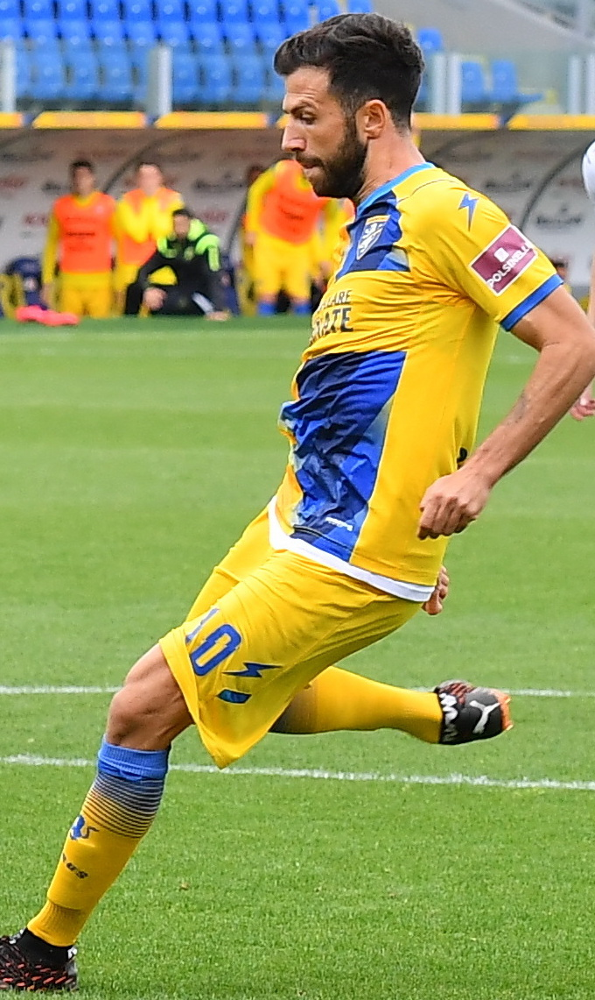
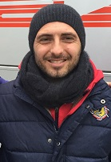
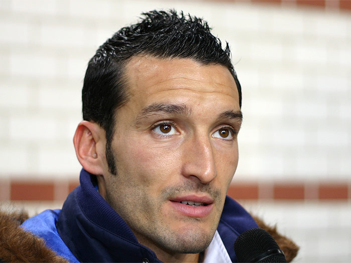
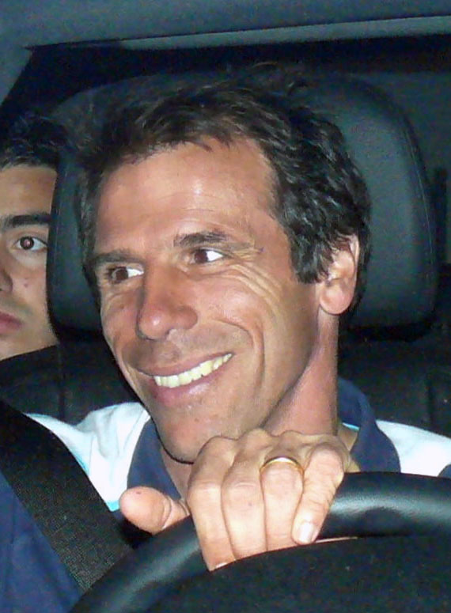
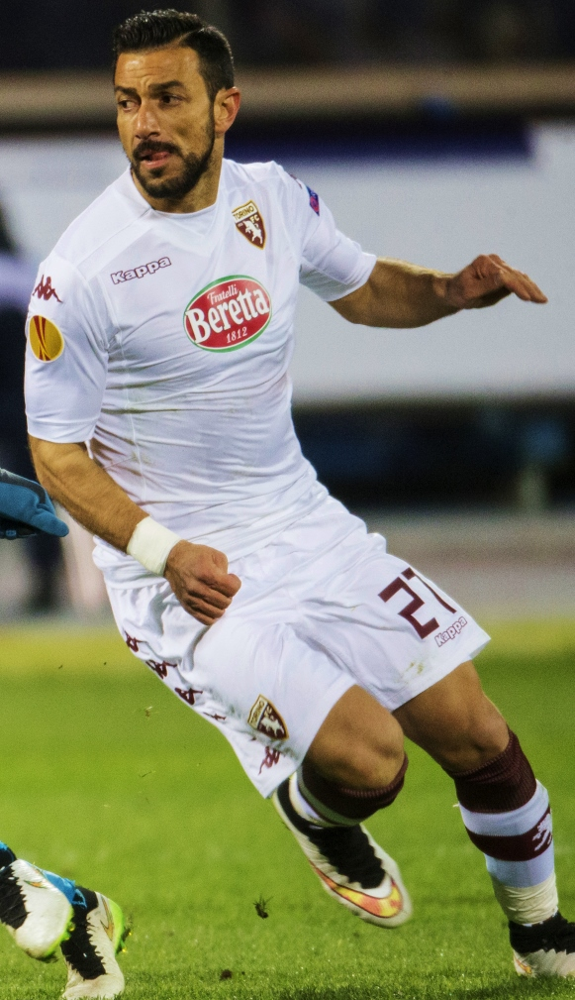

Pietro Lemmello
Pietro Lemmello est un joueur Italien ayant marqué les esprits de par ses qualités offensives.
IL a évolué dans plusieurs club de série C comme Frosinone. Il est le 2ème meilleur buteur du groupe C de la série C.
Source de l'image : https://en.wikipedia.org/wiki/Pietro_Iemmello#/media/File:Pietro_Iemmello_-_Frosinone.jpg
Massimiliano Guidetti
Massimiliano Guidetti est un ancien joueur Italien maintenant entraineur de Cosenza.
IL est le meilleur buteur du groupe A de la série C.
Source de l'image :https://commons.wikimedia.org/wiki/File:Massimiliano_Guidetti_nel_2016.jpg
Gianluca Zambrotta
Gianluca Zambrotta, un joueur polyvalent connu pour ses performances exceptionnelles en tant que défenseur latéral, a débuté sa carrière professionnelle
en Serie C avec le club de Como avant de devenir une star internationale à la Juventus, Barcelone et en équipe nationale italienne.
Gianfranco Zola
Gianfranco Zola, célèbre pour sa créativité et son talent en attaque, a commencé sa carrière professionnelle en Serie C avec les clubs de Nuorese
et Torres avant de devenir une légende à Naples, Chelsea, et en équipe nationale italienne.
Fabio Quagliarella
Fabio Quagliarella, reconnu pour sa capacité à marquer des buts spectaculaires et décisifs, a débuté sa carrière en Serie C avec Torino, avant de briller en Serie A
avec des clubs comme la Sampdoria, la Juventus, et d'atteindre la reconnaissance internationale avec l'équipe nationale italienne.